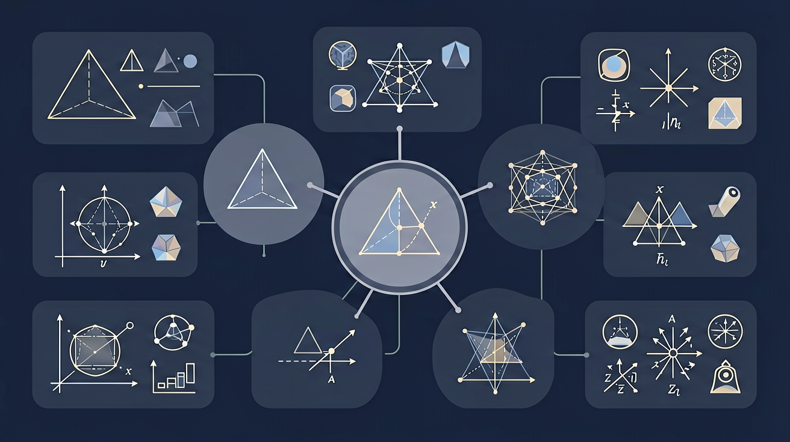

❓ 为什么篮球不是圆的？
❓ 两条平行线真的永远不相交吗？
❓ 三角形内角和为啥非得是180度？
学完这一课，这些问题你都能自信地回答。
🎯 能说出常见几何图形的定义和性质
🎯 能判断几何图形的类别和特征
🎯 能计算简单几何图形的周长和面积

1. 下列哪个是立体图形？
2. 直线有多少个端点？
3. 长方体有几个面？
🏋️ 即时练习：下列属于平面图形的是？
直线
无端点，无限延伸
射线
1个端点，单向延伸
线段
2个端点，有限长度
🏋️ 即时练习：射线有几个端点？
🏋️ 即时练习：正方体的展开图有几个正方形面？
观察你的教室，找出5种不同的几何图形（平面/立体都行），写下它们的名称和特征。
1. 下列说法正确的是？
2. 圆柱的展开图由哪些部分组成？
3. 过一点可以画几条直线？
4. 棱柱属于什么图形？
先独立作答，再点选项查看对错与错因。
以下哪个图形是正方形？
以下哪个图形是三角形？
以下哪个图形是圆形？
长方形有____条边，____个角。
答案：四，四
长方形有四条边和四个角。
正方形的四条边____，四个角____。
答案：相等，都是直角
正方形的四条边相等，四个角都是直角。
以下哪个图形是梯形？
观察校园中的建筑物，找出它们所对应的几何图形，并记录下这些图形的特征。
将复杂图形分解为基本图形单元
用数学语言描述图形特征和性质
对比不同几何图形的异同点
从生活中发现几何图形实例
将几何知识应用到实际问题解决
✅ 正方形是特殊的长方形（四边相等）
💡 对图形包含关系理解不全面
✅ 周长用长度单位（cm），面积用平方单位（cm²）
💡 对概念本质区别不清晰
口诀：点动成线线动面，面动成体记心间
类比：几何图形就像积木，简单形状能拼出复杂物体
下列哪个图形不是平面图形？
正方形的对称轴有几条？
（中考题）已知长方形的长比宽多2cm，周长为20cm，求面积是多少？
用6根等长火柴最多能拼成几个等边三角形？
教室地砖采用正六边形铺装，主要利用了该图形的什么特性？
And：学生已接触过简单图形如圆形、三角形
But：容易混淆平面图形与立体图形的本质区别
Therefore：建立几何图形分类体系
几何图形分平面图形和立体图形两大类。平面图形如长方形只有长和宽（如课桌桌面长80cm宽50cm），立体图形则有长度、宽度和高度（如粉笔盒长12cm宽8cm高5cm）。关键区别：平面图形所有点都在同一平面内，立体图形的点不在同一平面。例如，正方形纸片是平面图形，但把纸片折成立方体就变成立体图形。
🌍 教室里的黑板是长方形（平面图形），而粉笔盒是长方体（立体图形）。观察篮球——它的表面是圆形（平面），但整个篮球是球体（立体）。
下列哪个是平面图形？
And：已认识基本图形名称
But：不理解图形由点、线、面等基本元素构成
Therefore：掌握几何图形的组成规律
所有几何图形都由三个基本元素构成：点（没有大小，只有位置，如地图上的城市标记）、线（由无数点组成，如直尺边缘）和面（由无数线组成，如课本页面）。例如，一个三角形有：3个顶点（点）、3条边（线）和1个面。特别提醒：立体图形还多一个'体'的概念，如正方体有8个顶点、12条棱、6个面。
🌍 观察教室的门——门轴相当于点，门边是线，门板是面，整个门就是立体图形。窗户的窗框线条构成多个长方形平面。
正方体有几条棱？
开放任务：用三步写出你如何向同学讲清「几何图形初步」。